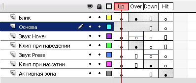
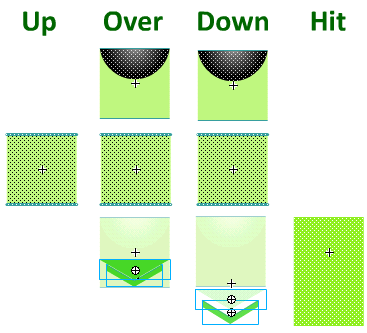
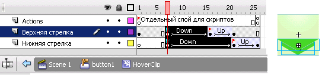
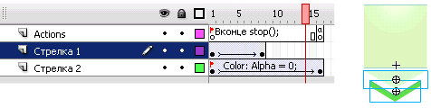
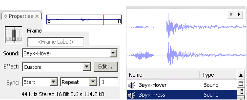
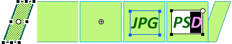

Кнопка - это специализированный фрагмент ролика, который имеет только четыре кадра. Переключение между ними происходит в ответ на положение курсора. А последний кадр и вовсе никогда не отображается. Его содержание определяет участок, на котором курсор может взаимодействовать с кнопкой.
Добавить кадры и нарисовать красивую анимацию привычным спобом не получиться. Но ограничения в количестве кадров можно обойти, воспользовавшись фрагментом ролика внутри кнопки.
Моя кнопка имеет вот такую структуру.
В данном примере на нижележащем слое я поместил объекты со стрелками, которые содержат свою временную шкалу.
Если вставить экземпляр Графики, анимация не будет проигроваться, потому что временная шкала синхронизирована с временной шкалой родительского объекта. А если создать фрагмент ролика, то он будет зациклен, что в нашем случае не подходит по задумке.
Поэтому, придется воспользоваться ActionScript. Я создал отдельный слой во фрагменте ролика и вконце добавил ключевой кадр. Таким образом скрипт будет действовать только в последнем кадре, а не во всей последовательности. Чтобы добавить код можно нажать правой кнопкой мыши на кадре. В контекстном меню будет пункт "Actions". В открывшемся окне скриптов напишем одну команду stop();. Это остановит проигрывание данного объекта.
Кстати, в окне свойств есть удобная возможность подписать группу кадров.
В свойствах любой группы кадров есть возможность добавить звук. Вначале необходимо импортировать звук (файл .mp3 или .wav) в Библиотеку символов. Так же как изображения, импортировать звук можно через меню “Файл” —> “Импортировать”, или простым перетаскиванием из папки на рабочую область.
В свойствах кадра выставляем нужный звук. Есть возможность применить эффекты изменения громкости. Есть важная опция синхронизации: событие, старт, стоп и поток. По-умолчанию выбрано "событие". Например, каждый раз при наведении будет начинаться проигрывание звуковой дорожки. В таком режиме, если подвигать курсором над несколькими кнопками, накладываются несколько одинаковых звуков. Поэтому стоит выбрать опцию "старт". Тогда на сцене будет проигрываться только один экземпляр звука. Опция "стоп", наоборот остановит воспроизвидение именно данного звука. А "поток" синхронизирует звук с анимацией, подобно тому, как ведет себя Графика.
Теперь, когда символ кнопки готов, можно создать пару экземпляров, украсить и добавить подписи.
